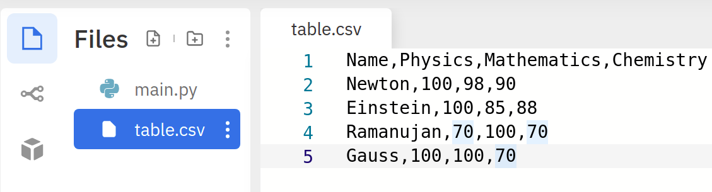

Home Lesson-8.1
File Handling
Reading CSV files
CSV files
Now that we are familiar with reading and writing simple files, let us see how to handle slightly more complex files. Comma Separated File or CSV files are quite common in data science. A CSV file looks like this:
xxxxxxxxxx61col0,col1,col2,col32row1,item11,item12,item133row2,item21,item22,item234row3,item31,item32,item335row4,item41,item42,item436row5,item51,item52,item53
A CSV file is one where adjacent values in each line are separated by a comma. Such files are a good choice for representing tabular data. For the rest of this lesson, we will assume that CSV files are used to represent some such tabular data. The first line in the file is called the header. The header gives information about the fields or columns in the data. The rest of the lines can be treated as rows in the data. If this file is represented as a table, it would look like this:
| col0 | col1 | col2 | col3 |
|---|---|---|---|
| row1 | item11 | item12 | item13 |
| row2 | item21 | item22 | item23 |
| row3 | item31 | item32 | item33 |
| row4 | item41 | item42 | item43 |
| row5 | item51 | item52 | item53 |
Reading a CSV file
Let us create a CSV file in Replit and name it table.csv:

Opening and reading a CSV file is no different from opening a text file. Let us try to print the lines in the file:
xxxxxxxxxx41f = open('table.csv', 'r')2for line in f:3 print(line.strip())4f.close()This is the output we get:
xxxxxxxxxx51Name,Physics,Mathematics,Chemistry2Newton,100,98,903Einstein,100,85,884Ramanujan,70,100,705Gauss,100,100,70
So far so good. Now that we are able to extract the lines from the file, let us start asking some questions.
Print the chemistry marks scored by the students, one in each line.
This requires us to extract the last column from the file. How do we do this? Consider any one line in the file, say the second one:
xxxxxxxxxx31# The `\n` at the end will be present for all lines except the last one2line = 'Newton,100,98,90\n' 3line = line.strip() # removes the \n characterThis is a string that corresponds to one row in the file. If we need to separate it into different columns, we need to use the split method and split the line based on a comma:
xxxxxxxxxx41line = 'Newton,100,98,90\n'2line = line.strip()3columns = line.split(',')4print(columns)This returns a list of strings:
xxxxxxxxxx11['Newton', '100', '98', '90']To extract the last column, we just need to take the last element from this list and convert it into an integer:
xxxxxxxxxx51line = 'Newton,100,98,90'2line = line.strip()3columns = line.split(',')4chem_marks = int(columns[-1])5print(chem_marks)That is all! We have done this for one row. We need to do this for all the rows. Enter loop:
xxxxxxxxxx71f = open('table.csv', 'r')2for line in f:3 line = line.strip()4 columns = line.split(',')5 chem_marks = int(columns[-1])6 print(chem_marks)7f.close()Aha, but we get an error:
xxxxxxxxxx41Traceback (most recent call last):2File "main.py", line 5, in <module>3chem_marks = int(columns[-1])4ValueError: invalid literal for int() with base 10: 'Chemistry'
Can you see why? We have tried to convert the last column of the header into an integer as well. The moral of the story is, when reading CSV files, we need to find a way to deal with the header. Let us modify our code towards that end:
xxxxxxxxxx101f = open('table.csv', 'r')2header = f.readline() 3# The file object has finished reading the first line4# It is now ready to read from the second line onwards5for line in f:6 line = line.strip()7 columns = line.split(',')8 chem_marks = int(columns[-1])9 print(chem_marks)10f.close()This works! In the second line, we read the header. Now, when the for loop starts in line-5, we are ready to read from the second line in the file. If this seems confusing, consider the following approach that uses the readlines method alone:
xxxxxxxxxx101f = open('table.csv', 'r')2lines = f.readlines()3# lines[1: ] is the rest of the list 4# after ignoring the header5for line in lines[1: ]: 6 line = line.strip() # strip the line of \n7 columns = line.split(',') # split based on comma8 chem_marks = int(columns[-1]) # convert last column to int9 print(chem_marks) 10f.close()readlines is a reasonable choice for reading small files, say under 1000 lines. We get all the lines of the files in a list. Reading a file reduces to processing a list of strings. If lines is the list of lines, then lines[i] corresponds to the line in the file. Going the other way, the line in the file corresponds to the string lines[i - 1].
IMPORTANT NOTE
However, when it comes to large files, readline is the best method to use. Processing large files is best done by reading it one line at a time. Using readlines for large files is a dangerous idea. This is because, readlines dumps the entire content of the file into a list of strings. When the file is large, this list will occupy huge memory. Let us try to write the same program given above using the readline method:
xxxxxxxxxx101f = open('table.csv', 'r')2header = f.readline().strip() # this is for the header3line = f.readline() # second line; actual rows begin4while line:5 line = line.strip() # strip the line of \n6 columns = line.split(',') # split based on comma7 chem_marks = int(columns[-1]) # convert last column to int8 print(chem_marks)9 line = f.readline() # read the next line in the file10f.close()
Files to Collections
It is often useful to convert a CSV file and store in a suitable collection. We could do this in several ways. Here, let us try to create the following list of dictionaries from the file:
xxxxxxxxxx51data = [2{'Name': 'Newton', 'Physics': 100, 'Mathematics': 98, 'Chemistry': 90},3{'Name': 'Einstein', 'Physics': 100, 'Mathematics': 85, 'Chemistry': 88},4{'Name': 'Ramanujan', 'Physics': 70, 'Mathematics': 100, 'Chemistry': 70},5{'Name': 'Gauss', 'Physics': 100, 'Mathematics': 100, 'Chemistry': 70}]
Couple of points to note.
- This is a list of dictionaries. Each element in the list corresponds to one row in the file.
- The elements in the header appear as keys in every dictionary.
- The values of the dictionary are of different data types. Names are strings, marks are integers.
This is going to be a fairly long code. Let us break it down. First, some basic processing to get the list of lines from the file after stripping them of the trailing newlines:
xxxxxxxxxx71### Block-1 ###2f = open('table.csv', 'r')3lines = [ ]4for line in f.readlines():5 line = line.strip()6 lines.append(line)7### At the end of this block, we have the list of lines ###Next, let us get the details of the header:
xxxxxxxxxx51### Block-2 ###2header = lines[0].split(',') # lines[0] is the first row3num_cols = len(header)4### At the end of this block, we have the header information ###5### We also know the number of columns in the file ###Now, it is time to go through the remaining lines in the file:
xxxxxxxxxx151### Block-3 ###2data = [ ] # list to store the contents3for line in lines[1: ]: # ignore the header4 cols = line.split(',') # split the column based on comma5 row_dict = dict() # create a dict to store this particular row6 for i in range(num_cols): # go through each element (column) in this row7 key = header[i] # key will be this column's name8 if key == 'Name': # are we storing a name or a number?9 value = cols[i] # since this is a name, don't convert to int10 else: 11 value = int(cols[i]) # since this is marks, convert to int12 row_dict[key] = value # update dict13 data.append(row_dict) # append this row to the list data14f.close()15### This completes our problem ###